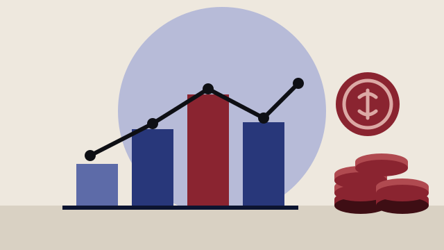

Besluttet 12. august, Økonomiudvalget, Roskilde
Første samlede overblik over budget 2027-2030
Sagen giver en foreløbig status på budgetlægningen for 2027-2030 efter indarbejdelse af indtægts- og udgiftsskøn forud for de afsluttende budgetdrøftelser i fagudvalgene, budgetseminar i september og 1. behandling af budgettet.

Kort fortalt
- Hvem
- Økonomiudvalget, Roskilde Kommune
- Hvornår
- Onsdag 12. august 2026
- Status
- Besluttet. Ad. 1: Taget til efterretning. Ad. 2: Udvalget besluttede, i lyset af de aktivitetsstigninger, der er identificeret på socialområdet, at fastholde råderumskatalog på 67 mio. kr. Ad. 3: Udvalget besluttede at søge 100 mio. kr. til skattestigning. Siden udsendelse af dagsorden er bilag vedrørende Notat om mulige skatteændringer til budget 2027-2030 revideret. Bilaget er udskiftet med udsendelse af referatet.Beslutningen er forkortet her. Læs hele beslutningen
Læs hele sagen Kommunens egen tekst
Indstilling
Forvaltningen indstiller, at
1. status på Budget 2027-2030 tages til efterretning
2. udvalget drøfter fagudvalgenes håndtering af råderumskatalog
3. udvalget beslutter om der skal ansøges om pulje til skatteforhøjelse, og i så fald hvilket
beløb/ændring der skal ansøges om
Sagsfremstilling
I overensstemmelse med budgettidsplanen forelægges en status på budget 2027-2030 som
grundlag for Økonomiudvalgets vurdering af behovet for at udmelde yderligere retningslinjer for
den fremadrettede budgetlægning.
Den 18. juni indgik regeringen og KL en økonomiaftale for 2027. Hovedpointerne i aftalen er en
løftet serviceramme på netto 3,3 mia. kr. svarende til 50 mio. kr. Roskilde Kommune. Der er i
servicerammen særskilt afsat 0,3 mia. kr. til normeringer på førskoleområdet. Anlægsrammen
er uændret i forhold til 2026. Aftalen indeholder en tilkendegivelse fra regeringen om, at
kommunerne har fokus på investeringer i de fysiske faciliteter til skole-, dag- og fritidstilbud.
Herudover er der reserveret en del af anlægsrammen til kommuner, der investerer i ekstra
botilbudskapacitet.
På indtægtssiden er der med aftalen videreført ekstra finansieringstilskud, der dog reduceres
kraftigt i 2028 og bortfalder fra 2029, hvor ny udligningsreform forventes at træde i kraft. Som
tidligere år indeholder aftalen puljer, der kan søges af økonomisk vanskeligt stillede kommuner.
Herudover indegår der puljer på 200 mio. kr. til henholdsvis sænkning og øgning af
indkomstskatter.
I juli har kommunerne modtaget den såkaldte tilskudsudmelding. Den økonomiske balance er
dermed opdateret med skøn på skat og tilskud/udligning. Herudover er der indarbejdet
tekniske korrektioner samt seneste pris- og lønfremskrivning, forvaltningens skøn på de
konjunkturbestemte områder, effekten af årets lov- og cirkulæreprogram, strategisk anlægsplan
inkl. salgsindtægter, finansielle poster og det brugerfinansierede område.
Balancen viser en udfordring i 2027 på 48,6 mio. kr. Til forårsseminaret var underskuddet i
2027 på 67 mio. kr. Siden forårsseminaret er skøn på skatter og tilskud/udligning opdateret,
hvilket isoleret set giver en forbedring af balancen på indtægtssiden i 2027 på 130 mio. kr.
Hovedforklaringerne på ændringen i indtægtssiden er beskrevet i bilag. På udgiftssiden
indeholder aftalen ca. 25 mio. kr. til lov- og cirkulæreprogram, primært vedrørende midler til
dagtilbud, samt øremærkede midler i servicerammen til førskoleområdet og ældreområdet for i
alt 9 mio. kr. At balancen alligevel ender med et underskud på 50 mio. kr. skyldes stigende
overførselsudgifter på 42 mio. kr. og en likviditetsreserve på 40 mio. kr. til håndtering af afledte
effekter af de bagudrettede konsekvenser af voldgiftskendelse vedrørende overtidsbetaling, jf.
status på likviditeten i Budgetopfølgningen, som er beskrevet nedenfor. De fremadrettede
konsekvenser er håndteret i overenskomsterne.
Økonomiaftalen indeholder tilkendegivelser om, at udbetaling af merarbejdet ikke skal gå
udover de øvrige serviceområder, men at KL og staten vil se på dette efterfølgende. Det er
forståelsen, at dette betyder, at kommunen ikke vil få en servicesanktion såfremt
udbetalingerne vil betyde overskridelse af servicerammen på baggrund af udbetalt merarbejde
vedr. voldgiftsdommen. KL har opgjort den samlede forventede udgift til 2,5 mia. kr. Roskildes
befolkningsandel af dette svarer til ca. 40 mio. kr., hvilket på nuværende tidspunkt er det
bedste bud på en udgift. På den baggrund af der ikke indlagt en servicebuffer men alene en
likviditetsbuffer.
Budgetudfordringen på 48,6 mio. kr. er lavere end de 67 mio. kr., som blev præsenteret på
forårsseminaret. Efterfølgende besluttede Økonomiudvalget at fagudvalgene udarbejder et
råderumskatalog med et måltal på 67 mio. kr. til brug i budgetforhandlingerne.
Økonomiudvalget skal drøfte fagudvalgenes arbejde med råderumskataloget ved
fagudvalgsdrøftelserne i august. Et uændret måltal vil give plads til prioritering mellem
råderumsforslag til budgetforhandlingerne, og en mulighed for at fagudvalgene laver en
prioriteret rækkefølge for forslagene.
Budgetopfølgningen for 2026 indeholder et forventet kassetræk på 68,9 mio. kr. i 2026 udover
det budgetlagte og en forventet likviditet på 485 mio. kr. ultimo 2026. Likviditeten på 485 mio.
kr. er inkl. gevinster fra ejendomsskatter for årene 2021-2023 som forventes at skulle betales
tilbage i en neutraliseringsordning. Tilbagebetaling i neutraliseringsordning er jvf. ny tidsplan fra
Skatteministeriet udskudt til 2029. Uden gevinsten ligger den forventede likviditet ultimo 2026
på 435 mio. kr., hvilket er under det langsigtede mål i de økonomiske retningslinjer. Dette er
baggrunden for indarbejdelsen af likviditetsbuffer i 2027 vedr. voldgiftssag.
Sundhedsreformen træder i kraft i 2027. KL har udarbejdet et foreløbigt skøn for den enkelte
kommunes bidrag til sundhedsreformen for at kunne lave et budgetoverslag. Skønnet kan
ændre sig inden 2. behandlingen af budget 2027-2030, da der forventes en endelig udmelding
i efteråret inden kommunernes budgetfrist for 2027. KL's foreløbige skøn er 8 mio. kr. lavere
end tidligere udmeldt skøn. Da ændringerne på indtægterne ikke er endelige, er det
eksisterende skøn opretholdt.
Strategisk anlægsplan er indarbejdet svarende til forårsseminaret. Udgiften til Roskilde
Idrætspark har indtil videre været indarbejdet med 30 mio. kr. netto. Efter afholdt
markedsdialog er forventningen at denne nettoudgift formelt vil være baseret på en udgift på
ca. 100 mio. kr. og en indtægt på ca. 70 mio. kr. De to transaktioner kan ikke adskilles, og et
udbud vil sikre, at Roskilde Kommune ikke afholder udgifter udover nettobeløbet. For at sikre
størst mulig transparens indarbejdes de to beløb i anlægsplanen.
Overslagsår
I overslagsårene indgår et balanceunderskud på 22,1 mio. kr. i 2028, 115,4 mio. kr. i 2029 og
Underskuddet stiger væsentligt fra 2028 til 2029. Det skyldes især to forhold. For det første
falder kommunens indtægter, blandt andet fordi finansieringen af overførselsudgifterne bliver
lavere, og fordi gevinsten fra selvbudgettering vedrørende 2025 kun gælder i 2028. For det
andet er der indarbejdet ensartede udgifter til anlæg i 2028 og 2029, men fra et udgangspunkt
i budget 2026, hvor anlægsbudgettet faldt fra 2028 til 2029, og derfor giver de ensartede
anlægsniveauer i 2028 og 2029 i balancen en forværring ift. budgetvedtagelsen 2026. Samlet
set betyder det, at økonomien forværres fra 2028 til 2029. Det øgede anlægsniveau siden
budgetvedtagelsen 2026 indgik også i balancen til forårsseminaret.
Det stigende underskud fra 2029 til 2030 skyldes primært en stigende demografitilvækst.
Underskuddet i 2029 falder sammen med en udligningsreform, som træder i kraft i 2029.
Roskilde Kommune har generelt en bedre socioøkonomi end landsgennemsnittet, hvilket de
seneste år har udmøntet sig i en større og større udligning. Samtidig er formålet med den
kommende udligningsreform at skabe en mere ligelig økonomisk balance mellem
kommunerne. Det forventes derfor, at Roskilde Kommune kan blive økonomisk dårligere stillet
efter reformen. Kommunen bør derfor have en likviditet i overslagsårene, der ligger i toppen af
den besluttede økonomiske retningslinje så der er økonomisk handlefrihed til at håndtere
eventuelle negative konsekvenser af en udligningsreform.
Service og anlægsramme
Der er i balancen indarbejdet servicerammeudgifter for 5.268,5 mio. kr. Den udmeldte
vejledende serviceramme for Roskilde kommune er af KL opgjort til 5.269,1 mio. kr. Udgifterne
ligger dermed 0,6 mio. kr. under rammen, og servicerammen overholdes akkurat.
Der er med strategisk anlægsplan indarbejdet bruttoanlægsudgifter for 300 mio. kr. Der er
udmeldt en vejledende anlægsramme til Roskilde kommune på 286 mio. kr. Udgifterne i
Roskilde kommune ligger således ca. 14 mio. kr. over anlægsrammen.
Økonomiske retningslinjer
Byrådet vedtog i maj nye økonomiske retningslinjer. Heriblandt at der vedtages budgetter i
balance, hvilket den opdaterede økonomiske balance ikke lever op til. Derudover skal Roskilde
Kommune understøtte kommunernes samlede overholdelse af service- og anlægsramme.
Servicerammen overholdes i den opdaterede balance, men uden luft. Anlægsrammen
overskrides med 14 mio. kr. Ønskes der indarbejdet flere serviceudgifter i budgettet vil det
kræve, at der samtidig fjernes tilsvarende serviceudgifter, for at overholde de økonomiske
retningslinjer. Tilsvarende vil anlægsniveauet skulle reduceres med 14 mio. kr. for at holde sig
indenfor anlægsrammen.
Ultimolikviditeten er 420 mio. kr. i 2027 faldende til 120 mio. kr. i 2030, hvilket er under det
langsigtede mål på 5.000 kr. pr. indbygger svarende til ca. 470 mio. kr. i 2027.
Den økonomiske retningslinje omkring gæld siger, at kommunen skal afdrage mere gæld end
der optages, og denne retningslinje er opfyldt. Der afdrages netto 92 mio. kr. i 2027.
Den økonomiske retningslinje omkring anlæg siger, at der skal budgetteres med et
bruttoanlægsbudget mellem 3.100 - 3.600 kr. pr. indbygger svarende til 290 - 335 mio. kr. i
2027, og denne retningslinje er opfyldt.
Frem mod budgetbehandlingen
Som opfølgning på Økonomisk Redegørelse ultimo august vil administrationen genberegne
indtægter vedrørende selvbudgettering og på den baggrund vil det endelige valg mellem
statsgaranti og selvbudgettering træffes ved 2. behandlingen af budgettet. Denne beregning er
ikke tilgængelig før medio september, da den afhænger af beregningsmodel udmeldt af KL.
I aftalen om kommunernes økonomi indgår en række puljer/tilskud, der kan søges om. Som
nævnt på Økonomiudvalgsmødet i juni søges særtilskudspulje samt lånepuljer ikke, da
Roskilde ikke falder indenfor kriterierne. I aftalen om kommunernes økonomi for 2027 indgår
en ramme på 200 mio. kr. til skatteforhøjelse. Kommuner, der får andel i rammen til
skatteforhøjelse, vil kunne hæve skatten inden for rammen uden risiko for individuel sanktion
ved en samlet skatteforhøjelse. Der er frist for ansøgning af puljen den 1. september. Det skal
afklares om puljen skal søges, og hvor stor en del af puljen, der skal søges om. Som bilag er
vedlagt effekterne af skattestigninger til brug for drøftelsen ligesom bilaget indeholder en
gennemgang af bindinger på ejendomsskatteområdet.
Økonomi
Sagen har ingen bevillingsmæssige konsekvenser i 2026, da den omhandler budgetlægningen
Beslutning
Ad. 1: Taget til efterretning.
Ad. 2: Udvalget besluttede, i lyset af de aktivitetsstigninger, der er identificeret på
socialområdet, at fastholde råderumskatalog på 67 mio. kr.
Ad. 3: Udvalget besluttede at søge 100 mio. kr. til skattestigning.
Siden udsendelse af dagsorden er bilag vedrørende Notat om mulige skatteændringer til
budget 2027-2030 revideret. Bilaget er udskiftet med udsendelse af referatet.
Rasmus Jarlov (C), Maria Kongsaa (I), Merete Dea Larsen (O) og Jette Tjørnelund (V)
kunne ikke tiltræde indstillingens punkt 3.
Merete Dea Larsen (O) og Jette Tjørnelund (V) ønsker ikke en skattestigning grundet
indtægtsstigning på grundskyld.
Rasmus Jarlov (C) og Maria Kongsaa (I) kunne ikke tiltræde, da begge partier er imod
skattestigninger.
Fremstilling
Kilde: Roskilde Kommune, Økonomiudvalget, referat fra mødet onsdag 12. august 2026, punkt 4. Læs den originale sag hos kommunen.